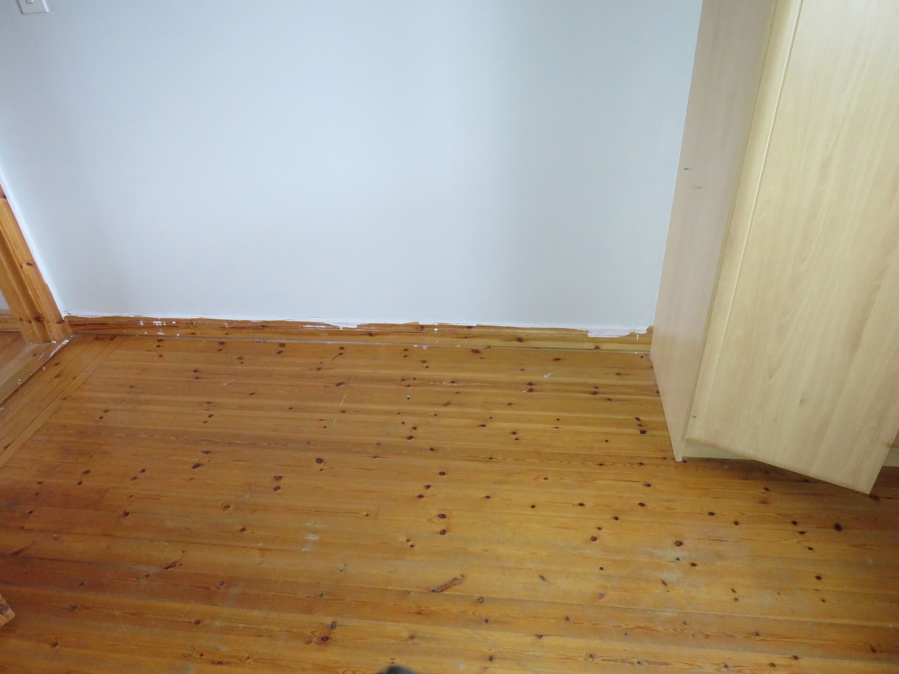
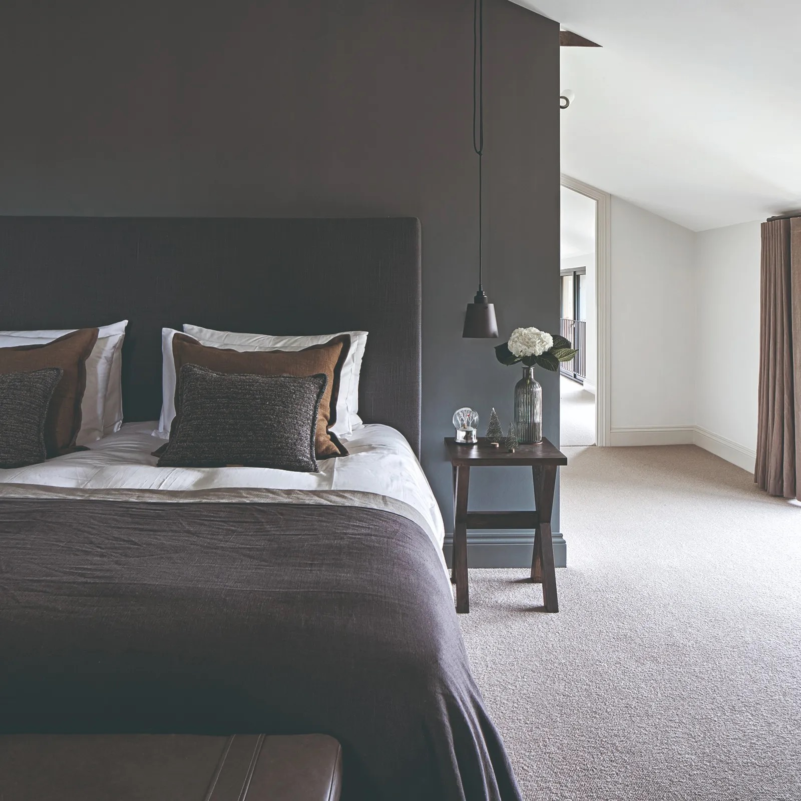
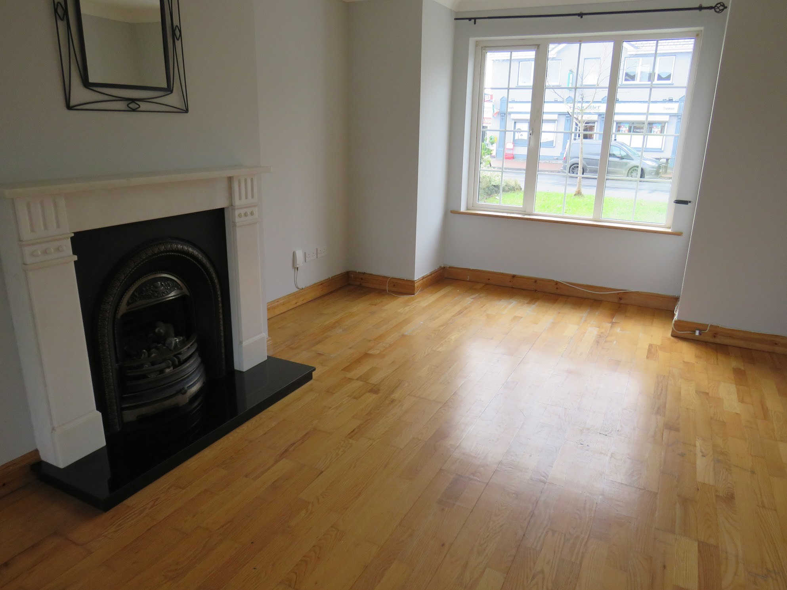

Upstairs Flooring 🛏️
- Lay grey carpet across bedrooms, landing, and stairs.
- Select a medium pile with stain protection for easy maintenance.
- Install fresh underlay for warmth and sound reduction.
Current Photos

Inspo Photos

Downstairs Flooring 🛋️
- Fit SPC (stone plastic composite) flooring throughout in a light oak finish.
- Use matching trims and stair nosing for a polished look.
- Allow expansion gaps and finish neatly under door bars.
Current Photos


Inspo Photos